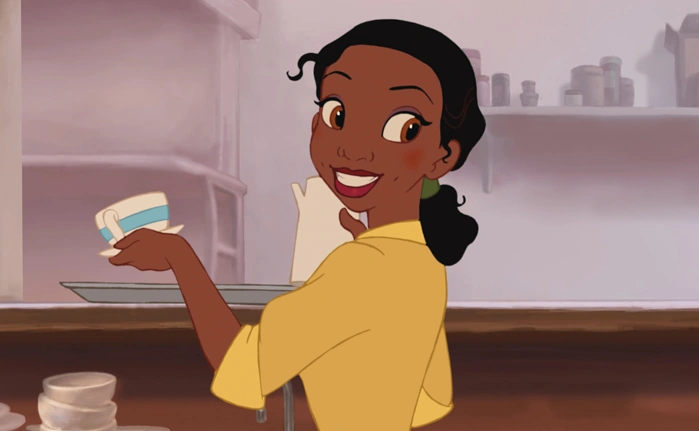
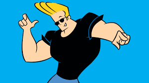

Tiana is a Disney princess depicted in the movie The Princess and the Frog. She's a sweet person with a lovable, fun personality. She's an amazing cook and even better singer, and loves music. She has unlimited stories to tell about her life and her adventures, both human and while stuck as a frog. She can give me all types of recipes, tips, and tricks to make the best southern food, and I think she would just be a fun person to talk to and to be around. Compared to the rest of the guests, she's definitely the calmest, but I think it would be nice to have her there if things get heated.

Naruto Uzumaki is an anime character from the series Naruto. He's an over-the-top, loud, obnoxious, funny person who's also brave, strong, and kind. He's the type of person who would do anything for a friend, and even when it gets difficult, he'll stick by your side. He's known for his special abilities, like the rasengan, and for his absolute favorite food, ramen. I think he would be a fun person to hear about all his adventures and stories, fighting the evil of his world, and while simultaneously entertaining the guests and slightly competing with them at the same time.

Johnny Bravo is from a series on Cartoon Network called Johnny Bravo. He's an overly confident, extroverted man who is convinced that every woman on earth wants him, and he's stronger and better than most men. While it sounds annoying, he really is hilarious to watch interact with other people, and he would definitely add some fire to the party. In relation to the other guests, he'll be a fun character to throw into the mix as long as no one touches his hair.
